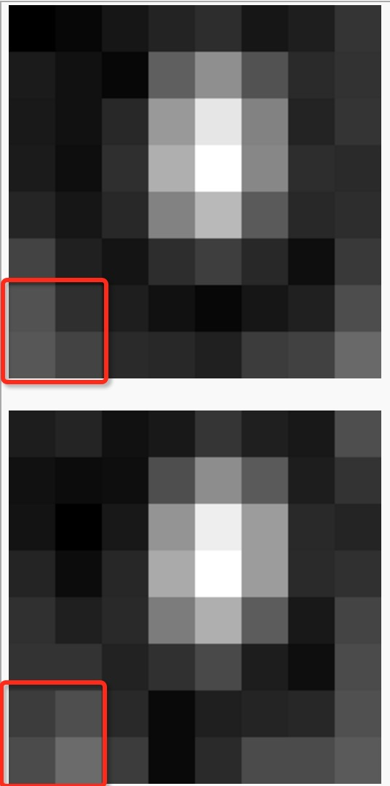
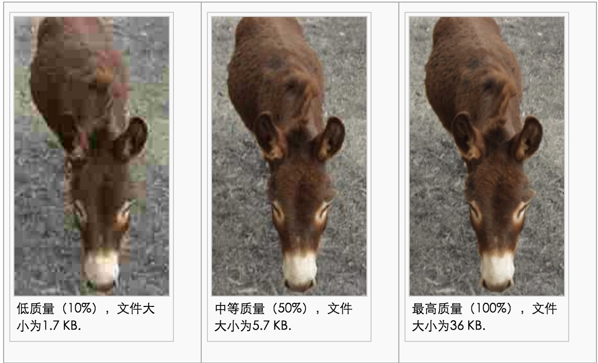

jpg, png, bmp, tiff, gif, webp, pcx, tga, exif, fpx, svg, psd, cdr, pcd, dxf, ufo, eps, ai, raw...
FileApi, Canvas, TypedArray, Xhr2, Blob...
支持率高失真率过得去1600万色小很多

alert(Blob);
function Blob() { [native code] }
// 赞！
new Blob(); // 有些旧点的浏览器需要用BlobBuilder、安卓5以前都要加Webkit前缀
因为 5在中国已经比较少了， 3是平板系统可以忽略
所以最终确定的支持范围： 6.1+， 4+
toBlob只有ff和ie10支持，所以最后都用了toDataURL，然后再转成Blob
dataURLimg来获取图片高度和宽度img绘制到Canvas上（要旋转图片需要两个canvas）BlobBlobappend到FormData中，由xhr发送image/jpeg出来是pngJPEGEncoder，解决 压出来是png的问题